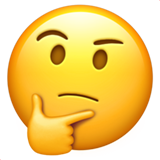

REFRIGERATOR
APP UX/UI
REDESIGN
REFRIGERATOR
APP UX/UI
REDESIGN
잔고냉장고 APP 리디자인
잔고냉장고 APP 리디자인을 진행하였습니다. 불편한 UX와 가독성, 정보 전달력 등이 떨어지는 UI를 수정하고 부가적인 기능들을 추가하여 사용자의 APP에 대한 접근성을 높일 수 있도록 APP의 아이덴티티를 재정립해 UX와 UI를 대폭 수정하였습니다.
HEY 민지씨, 어떤 것들을
작업했나요?
• 프로젝트 개요
모바일 어플리케이션 ‘잔고 냉장고’ UX/UI Redesign 및 Develop
• 업무 요약
국내 모바일 앱 시장에 출시 된 어플리케이션 중 완성도가 미흡하거나 개선사항이 확인 되는 어플리케이션을 선정하여 사용자가 보다 편리하게 어플리케이션을 사용할 수 있도록 어플리케이션의 전반적인 UX 및 UI를 수정하여 리디자인한다.
• 프로젝트 타임라인
어플 선정 - 자료 리서치 - 타겟층 및 디바이스 선정 - 비전 확정 - 무드보드 리서치 - 스타일 가이드 제작 - 와이어프레임 제작 - 디자인 작업 및 프로토타입 제작
• PL 담당, 팀내 의견 조율
• 사전 자료 리서치
1. 경쟁 앱 분석 : ‘ 언제까지 - 유통기한 관리 및 알람 ’ 앱 리서치 및 장단점 분석
2. 잔고냉장고 IA 분석 : 비용관리 파트에 대한 IA 정리
3. 잔고냉장고 기존 앱 장단점 분석
4. 타겟 분석에 있어 연령층과 시장 자료에 대한 리서치
• 구체적 페르소나 제작 및 빌드업
• 팀내 전반적 디자인 업무
1. 앱 스타일 가이드라인 제시
2. 앱 아이콘 제작
3. 1차 디자인 방향 제시
4. PT 자료 제작
• 잘 된 점
확실한 업무 부담
1. 프로젝트 멤버 개개인의 강점이 달라 포지션 분업이 잘 진행 됨
공동 작업
1. Xd 공동작업 기능을 통한 실시간 작업 수행
2. 팀 멤버들의 실시간 피드백을 통해 의견 조율이 확실히 진행 됨
3. 시장 리서치, 타겟 및 디바이스 선정, 비전 확정, 무드보드 서치, 앱 컬러 선정 등 대량의 데이터가 필요한 작업에 있어 함께 작업 수행
확실한 의견 피력, 최소한의 대립과 피드백 제안 및 수용과 조율
• 부족한 점
더딘 작업
1. 공동 작업을 진행하다 보니 의견 조율에 있어 시간이 지체되어 다른 팀에 비해 전반적인 작업의 속도가 느려짐
개선방안➡간트차트를 활용해 업무별 명확한 시간을 할당해줌
• 프로젝트 개인 총평
팀원 누구 하나 누락되거나 한명 에게만 부담스러울 정도로 업무가 분담되지 않았다. 팀원 개개인의 능력치와 강점에 의거 한 확실한 업무 부담, 실시간으로 의견이 피력되고 그에 대한 피드백이 활발하게 오갔다. 피드백을 제시하는 사람도 피드백을 수용하는 사람도 사사로운 감정적으로 부딪히지 않고 해당 프로젝트의 앱이 사용자의 경험에 있어서 가장 좋은 시너지를 낼 수 있는 방향으 로 잘 이끌고자 하는 마음이 있어 의견이 순탄히 조율 되었다.
그동안 수 많은 팀플과 프로젝트를 진행해보았지만, 그 때 마다 크고 작게 의견 분쟁이 있어 그런 것들을 조율하는 것에 이골이 났던 나에게는 색다른 팀 경험이었다.
이것은 개인적인 평가에 대한 아쉬움인데, 마지막에 분업을 하다보니 발표용 PPT 제작을 맡게 되었는데 전체적으로 수정 시간도, 제작 시간도 촉박해 PPT 제작에만 몰두하다보니 팀원들을 도와 함께 xd 작업을 수정하고 프로토타입 연결에 있어 많은 도움을 주지 못해 그 점이 매우 아쉽다.
그래도 팀원들이 xd를 관리할 동안 만족스러운 PT 자료를 제작할 수 있게 되어 그 점은 분업이 매우 잘 되었다고 생각한다. PL의 존재 이의가 무색해질 정도로 성숙하고 서로에 대한 배려와 예의가 확실했던 팀이 었어서 더욱 만족스럽게 프로젝트를 마무리할 수 있었다.